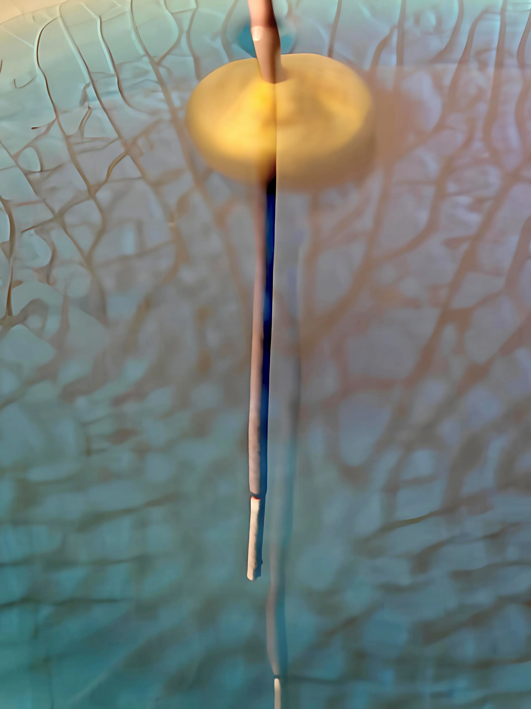

Penance
New Horizons And Cool Incense
There was this particular perfume I enjoyed; it was a very meditative oud perfume with ample incense grounding in nagarmotha - it was and is amazing.
The main aspect that I chased in Penance was how much of a meditative soul could I embed into an oud base without throwing off the balance.
Having the core concept settled, the secondary goal was to set a scene, in my mind it was a sole incense stick burning in the middle of the ocean.
To build that scentscape, I used some dense materials to build an oceanic landscape - somewhat salty, somewhat ocean-animalic.
The perfume introduces itself with a burst of water sweetness, akin to sweet and juicy quince and cold cucumbers in the middle of summer.
What comes next is the transition - the middle part of sweet ocean waters to dense calming oud - the matrix of vetiver, patchouli, and nagarmotha.
An almost dry earthy notes passes by into a myriad of zen notes of resins to lay the final grounding notes.
This is the idea of "penance" - a boundless ocean of forgiveness that only comes from sitting with ones actions and reality.